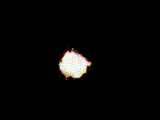
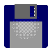
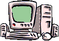
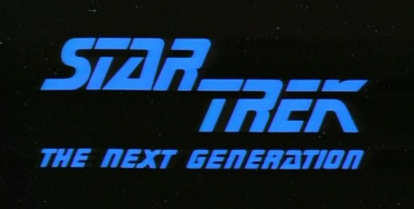
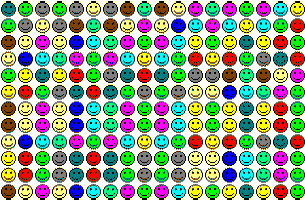
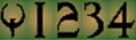
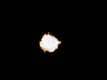
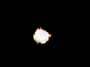
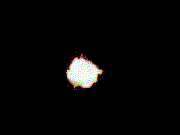
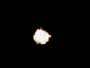

Play Some Music!
Struan Clark
WELCOME! WELCOME! WELCOME!
Hi! Welcome to my website!
Two of my favorite things are computers:
 
and Star Trek:

Have a nice day!

You are visitor number:

 Struan Clark
Struan Clark  Hi! Welcome to my website!
Hi! Welcome to my website!

 Struan Clark Hi! Welcome to my website!
Struan Clark Hi! Welcome to my website!